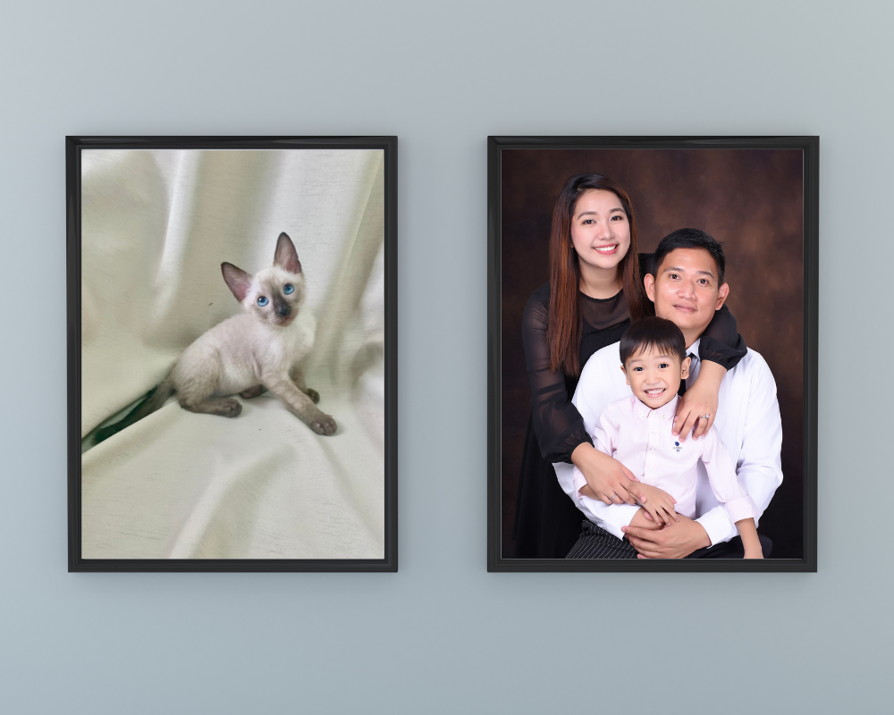

Hi there! I'm a stay-at-home mom and website project manager, balancing my professional life with my favorite job of all - taking care of my little ones. With a 5-year-old son and a 2-month-old Siamese kitten named Coco, my days are always filled with laughter and love. I cherish every moment I get to spend with them, whether it's playing, teaching, or simply cuddling up for nap time.
To make things work, I've adopted a unique schedule that allows me to maximize my time with my family while still being productive at work. I work at nights, when my son is asleep and my kitty is curled up at my feet. During the day, I tackle household chores and take on online course assignments. I find that this flexible routine not only suits my family's needs, but also keeps me motivated and engaged with both my work and personal life.
As a website project manager, I bring a creative eye and a sharp attention to detail to every project I handle. I enjoy collaborating with web developers to create beautiful and functional websites that truly reflect their vision and brand. I take pride in being able to balance my passion for work with my family commitments, and I'm constantly inspired by the incredible people and projects that I get to be a part of.
Thanks for taking the time to get to know me a little better - I'm excited to see where this learning journey takes us!